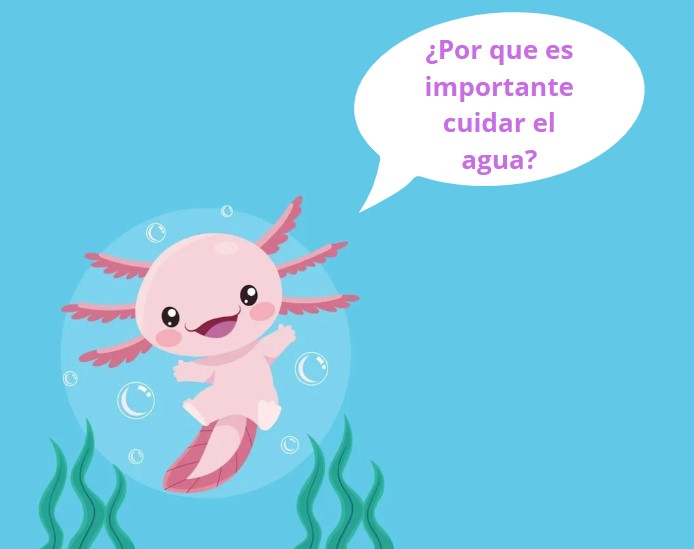
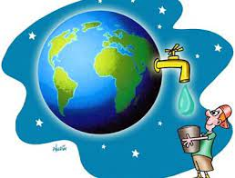
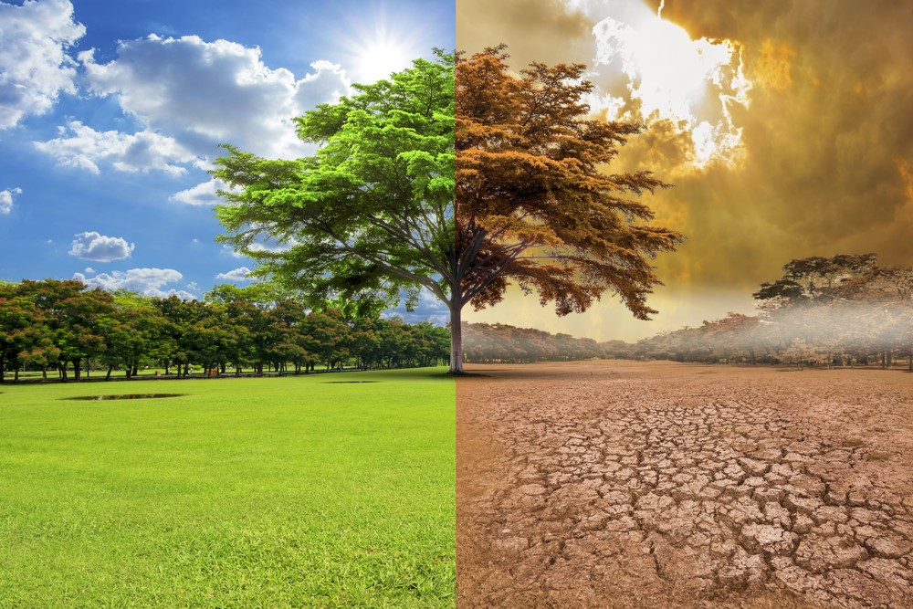

 El agua es un recurso fundamental que desempeña un papel crucial en la vida de nuestro planeta. Su importancia se extiende a todas las formas de vida y a numerosos aspectos de la sociedad y el medio ambiente. A continuación, se destacan algunas razones clave que subrayan la importancia del agua en el mundo : Vital para la supervivencia humana: El agua es esencial para la vida humana. Nuestros cuerpos dependen de ella para funciones biológicas básicas, como la digestión, la regulación de la temperatura y la eliminación de desechos. La falta de acceso a agua potable segura puede resultar en enfermedades y, en casos extremos, en la pérdida de vidas.
Base de la seguridad alimentaria: La agricultura, uno de los pilares de la seguridad alimentaria, depende en gran medida del agua. Los cultivos necesitan agua para crecer, y la disponibilidad adecuada de este recurso es esencial para mantener la producción de alimentos y alimentar a una población mundial en constante crecimiento.
Sostenibilidad ambiental: Los ecosistemas acuáticos, como ríos, lagos y océanos, son hábitats críticos para una amplia variedad de especies. La salud de estos ecosistemas depende directamente de la calidad y cantidad de agua disponible. La contaminación y el agotamiento de los recursos hídricos pueden tener efectos devastadores en la biodiversidad y en la estabilidad de los ecosistemas.
Desarrollo económico: El agua también desempeña un papel crucial en el desarrollo económico. Es un recurso indispensable para diversas industrias, desde la producción de energía hasta la fabricación y la minería. Además, la navegación y el comercio internacional dependen de vías fluviales y puertos accesibles.
Mitigación del cambio climático: Los cuerpos de agua, como los océanos, actúan como sumideros de carbono, absorbiendo dióxido de carbono de la atmósfera y ayudando a mitigar el cambio climático. Además, la vegetación acuática contribuye a la producción de oxígeno, vital para mantener el equilibrio en la composición atmosférica.  Recreación y bienestar: El agua proporciona oportunidades para la recreación y el bienestar humano. Desde la natación y los deportes acuáticos hasta la relajación junto al agua, su presencia mejora la calidad de vida de las comunidades y contribuye al turismo sostenible. |